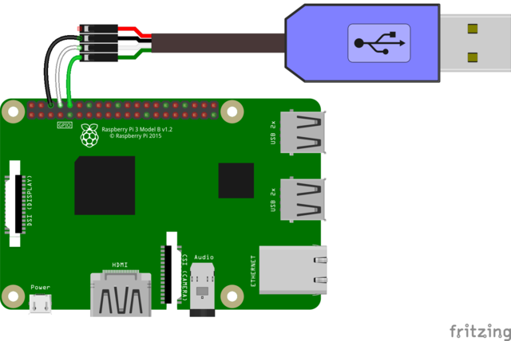
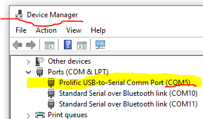
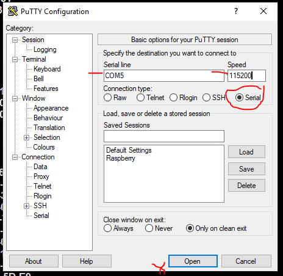
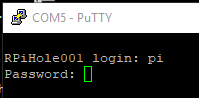
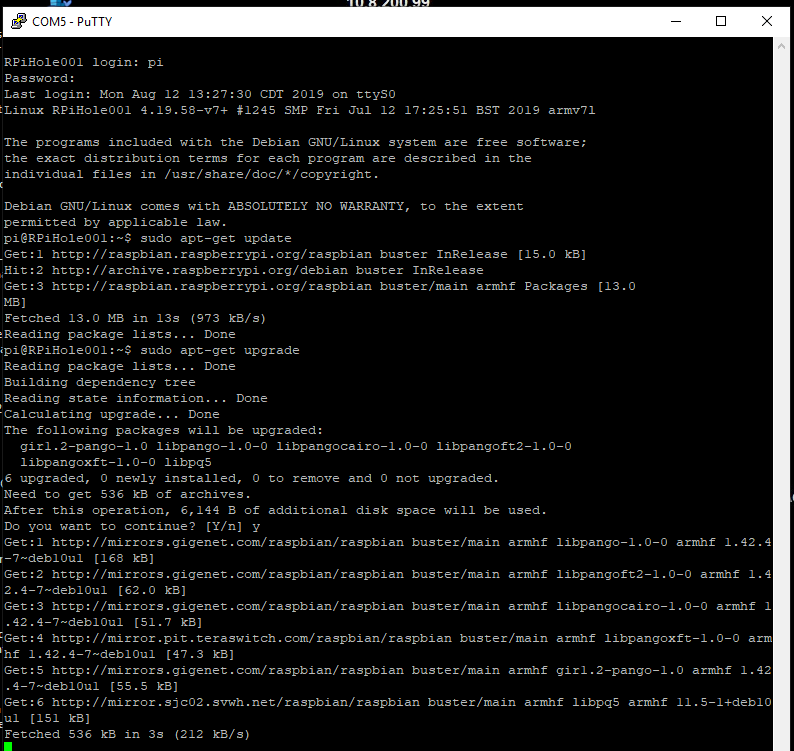

USB TTL to Raspberry Pi
These instructions will show you how to
use the PuTTY client and a USB TTL cable to connect to a Raspberry Pi.
Reference: https://learn.adafruit.com/adafruits-raspberry-pi-lesson-5-using-a-console-cable/overview
This software allows you to run a terminal window (CLI) on a Raspberry Pi over a network using your laptop.
This
'remote access' technology has revolutionized the way IT professionals work, allowing them to access numerous devices all over the world from their computer.
More information on PuTTY is available online.
Being able to use this software will greatly simplify working with the Raspberry Pi, Arduino UNO and micro:bit.
After completing this assignment you will be able to:
- Connect to the Raspberry Pi using a USB_TTL cable and PuTTY
- Issue commands to the Raspberry Pi from your laptop using PuTTY
- Update/upgrade the Raspberry Pi from your laptop using PuTTY
This assignment reviews basic computer concepts that you will need in this course and throughout your career.
You are expected to have a working knowledge of SBC hardware and software.
If you do not understand how to use an item, perform a Google Search,
refer to the WSU Technology Knowledge Base, ask a teaching assistant, or ask the instructor.
Refer to IOTPi03 for installing and configuring PuTTY
This assignment builds on IOTP03, and shows how to use a USB cable that contains a TTL chipset that connects to GPIO pins on a Raspberry Pi, then allows you to establish a terminal session.
Need to rewrite instructions from here on, PgP, 8/12/2019. Renumber this assignment...
Retrieve Comm Port Info
PuTTY Serial Settings
PuTTY Log In
After this it is just like an SSH session from IOTP03
PuTTY Serial Session
- These steps are performed on your laptop.
- Open a browser to: https://www.chiark.greenend.org.uk/~sgtatham/putty/latest.html
- Download and save the latest (.72 or above) 64-bit Windows version of PuTTY to your '
- Use File Explorer, find the PuTTY install file, and double-click to install the program.
- During the install of PuTTY accept all of the default settings.
- Press the Windows key and type:
putty
, then press the ' Enter' key to start PuTTY.
- The first time PuTTY starts, there are no connections, so it looks like this:
 PuTTY
PuTTY
(90) 1. Upload your screenshot to the 'IOT14' D2L Assignment Folder.
(10) 2. Assignment submission